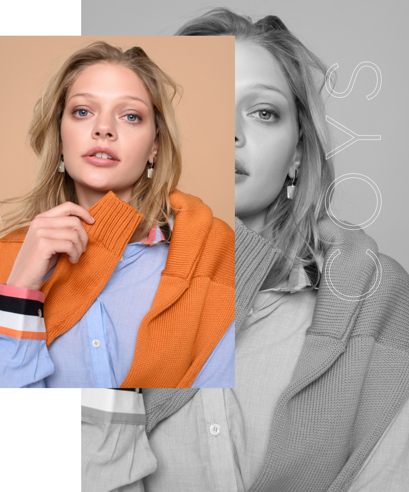
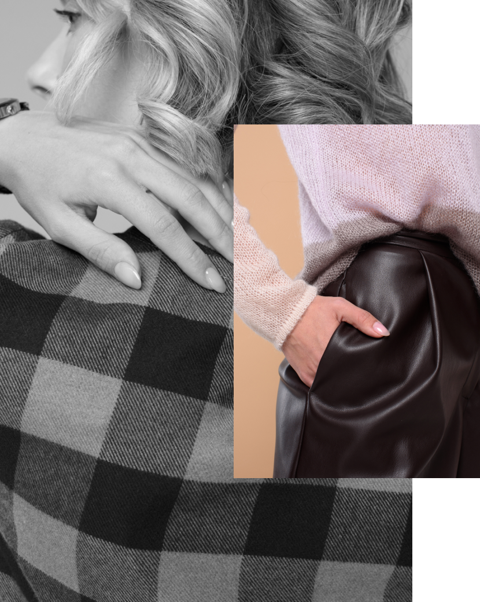

<!-- about start -->
<section class="about">
    <div class="wrapper">
        <div class="about__content">
            <div class="about__header">
                <a href="#!" class="images-product__link-back">
                    
                    <h4 class="images-product__link--text">Назад</h4>
                </a>
                <h3 class="about__header--title">Про бренд</h3>
            </div>
            <div class="about__cards">
                <div class="about__card">
                    <div class="about__card--left">
                        <div class="about__card--content">
                            <h4>Український бренд одягу з натуральних тканин з акцентом на колір</h4>
                            <p>
                                COYS - український бренд жіночого та чоловічого одягу з натуральних тканин з акцентом на
                                колір.
                            </p>
                            <p>
                                Абревіатура «Colors Of Your Soul» означає «Кольори твоєї душі». Адже ви- бираючи
                                гардероб ми завжди покладаємося на свій настрій і внутрішній стан.
                            </p>
                            <p>
                                Одяг COYS - це ціла філософія. Простий, зручний крій. Натуральність. Екологічність.
                                Практичність. Мінімалізм. Колір - як кращий спосіб самовираження.
                            </p>
                        </div>
                    </div>
                    <div class="about__card--right">
                        
                    </div>
                </div>
                <div class="about__card">
                    <div class="about__card--left">
                        
                    </div>
                    <div class="about__card--right">
                        <div class="about__card--content">
                            
                            <p>
                                Окрему увагу варто приділити логотипу бренда COYS.
                            </p>
                            <p>
                                Це графічне зображення квітки льону, яка здатна «розквітати» кожен раз по-новому. Кожен
                                новий сезон дизайнери бренду оформлюють логотип у найтрендовiших кольорах сезону,
                                керуючись дослідженнями Iнституту кольору Pantone. Колекції бренду створюються
                                відповідно в наймодніших і, звичайно ж, в улюблених базових відтінках. Логотип бренда
                                COYS - це свого роду орiєнтир по колірних трендам сезону.
                            </p>
                        </div>
                    </div>
                </div>
            </div>
        </div>
    </div>
</section>
<!-- about end -->